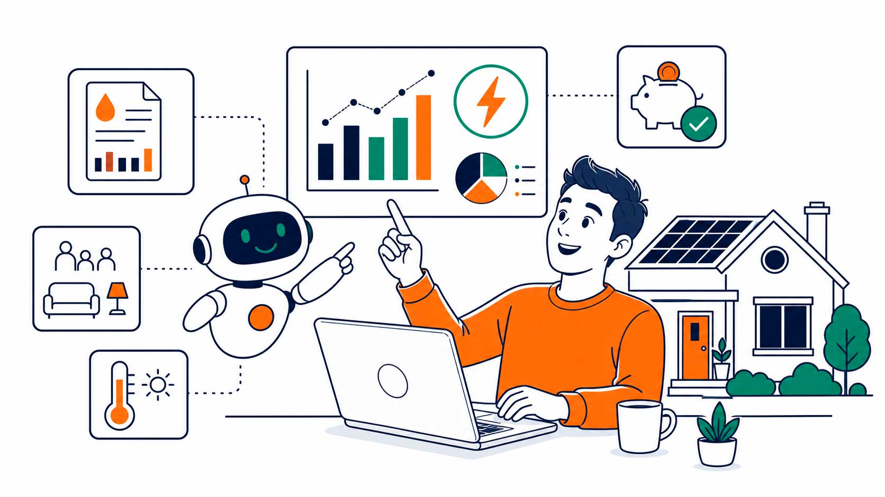

IN PRIMO PIANOCome funziona l'analisi intelligente della bolletta: perché non esiste una tariffa uguale per tutti
Ogni famiglia e ogni impresa concentra i propri consumi in fasce orarie e stagioni diverse. Scopri come il nostro comparatore brevettato legge i dati reali della tua fornitura per individuare la taglia energetica più coerente con le tue abitudini.